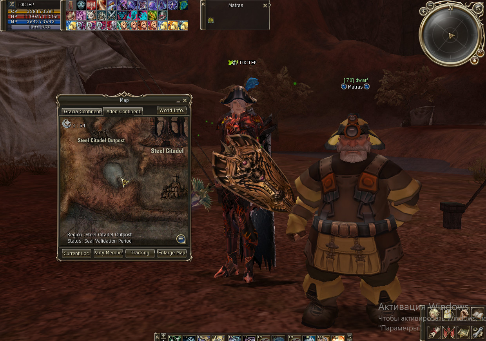
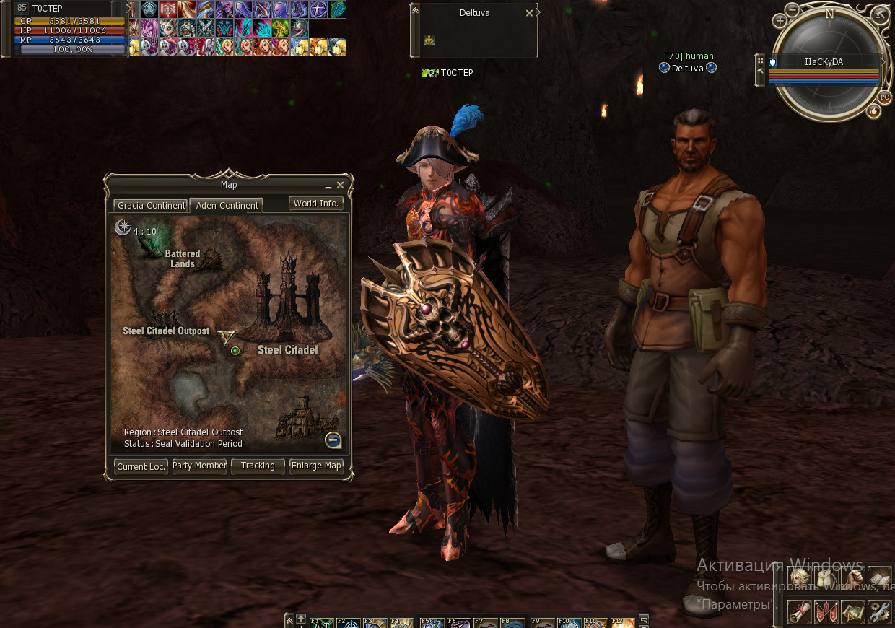
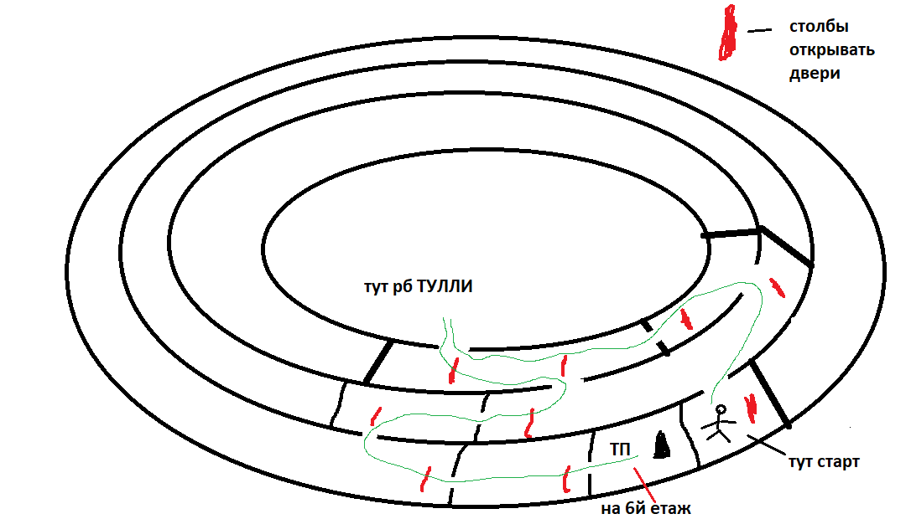
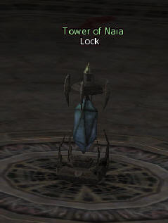
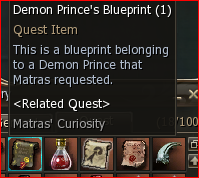
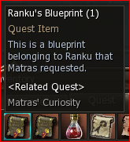
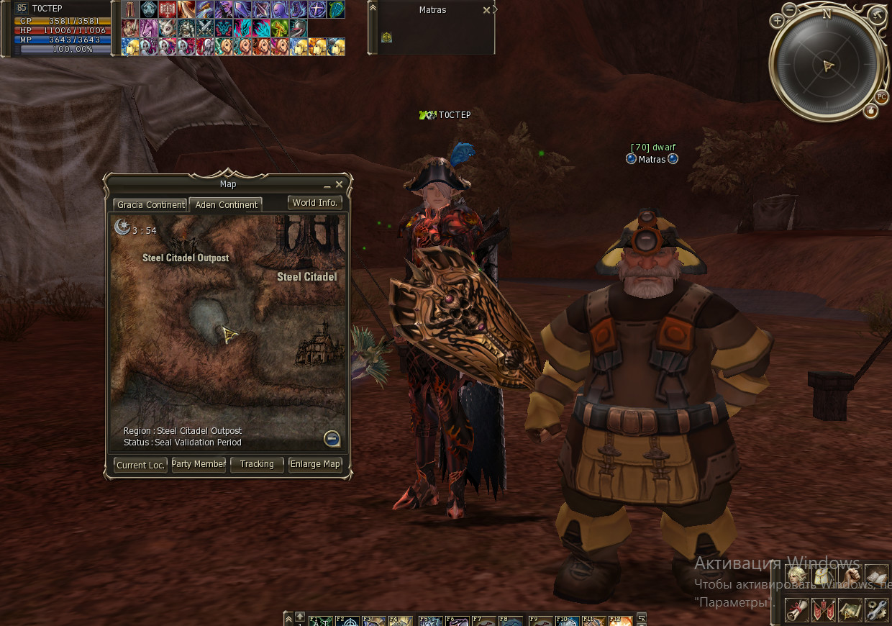
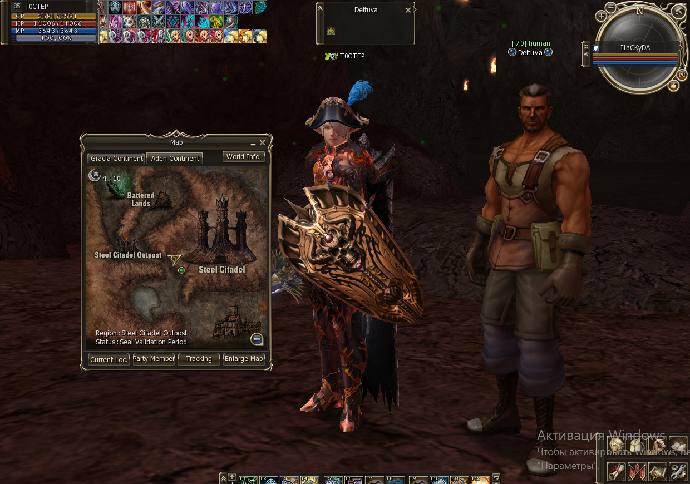
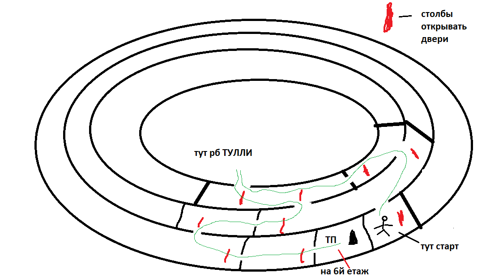
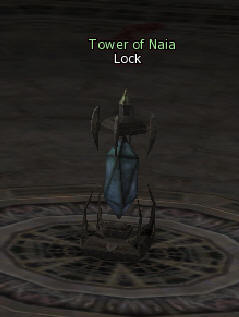

And so ... it's a guide to killing a beleth on one server (rpg-club).
after that we are looking for NPC Matras
 ,
and FINISHED the quest “Matras' Curiosity”

to the second tower (popularly: Tuli workshop, workshop or Tuli). Then through NPC Dorian

PL teleports party to tower (you must be in party and 2th character nearby), if you are weak use SD of BD. 1st floor - immediately run to the TP's Pillar and press "up", 2-4 floors, just press on the TP's Pillar 5th floor labyrinth, we go according to the scheme and kill the RB (if he will be alive )and go to the TP

then we just jump through the floors. On the roof you can kill Darion's RB and if you have a buff> 45min or have your own we go to the 3rd tower of the beleth (Tower of Naia) on the roof of the 3rd tower is "lock",

UNTIL APPEARANCE 4 MOBS! As soon as they appeared, we stop HITING and click "TP" on the near box .
If "the lock" is broken, we 'smoke' for 10 minutes + -. And then we hit again "the lock."
After teleporting to tower 3, we run through the rooms, and beat the mobs.
If buff > 45min and you are strong you can leave 2th twin.
Having reached the bottom(basement), where the "fountain" is, if there is a crystal, we make a party and a СС, geolocating all characters does not matter, teleports the current of those who are near the crystal, will help /channelinvite ( nickname's PL of another party) and fly to the epik.
If there isn't a crystal, we are looking for a rabbit and kill it. Sometimes it is a on the fountain's top and we can use only range skill or bow to get this rabbit.
Further mobs climb from the fountain:
1st wave without attribute - disappear by themselves or you can kill it.
Then over beat the mobs of the 1st attribute.
As for me - we look at who climbs more :golems or lizards and kill who is more.
Then RB will appear, after killing him, a crystal will appear, and then made CC ...
what do we need on the first hike? Let's see:
- made the quest to enter at HB
- quest items
- Ranku's Blueprint
 - Demon Prince's Blueprint 
- Ranku's Blueprint
- map HB (not necessary)
after that we are looking for NPC Matras
 ,
and FINISHED the quest “Matras' Curiosity”
What else do you need on the hike? =>
- range skill or bow (any)
- party (min 2 characters) to enter the tully, and the 2th character MUST BE near
- +2 more characters to make CC (min 4 characters for everything)
- be cool DD (I had enough claws + 12 and SK) or take your buff
- server item "Mob's Tekila"
- permission CL )

to the second tower (popularly: Tuli workshop, workshop or Tuli). Then through NPC Dorian
PL teleports party to tower (you must be in party and 2th character nearby), if you are weak use SD of BD. 1st floor - immediately run to the TP's Pillar and press "up", 2-4 floors, just press on the TP's Pillar 5th floor labyrinth, we go according to the scheme and kill the RB (if he will be alive )and go to the TP

then we just jump through the floors. On the roof you can kill Darion's RB and if you have a buff> 45min or have your own we go to the 3rd tower of the beleth (Tower of Naia) on the roof of the 3rd tower is "lock",

UNTIL APPEARANCE 4 MOBS! As soon as they appeared, we stop HITING and click "TP" on the near box .
If "the lock" is broken, we 'smoke' for 10 minutes + -. And then we hit again "the lock."
After teleporting to tower 3, we run through the rooms, and beat the mobs.
If buff > 45min and you are strong you can leave 2th twin.
Having reached the bottom(basement), where the "fountain" is, if there is a crystal, we make a party and a СС, geolocating all characters does not matter, teleports the current of those who are near the crystal, will help /channelinvite ( nickname's PL of another party) and fly to the epik.
If there isn't a crystal, we are looking for a rabbit and kill it. Sometimes it is a on the fountain's top and we can use only range skill or bow to get this rabbit.
Further mobs climb from the fountain:
1st wave without attribute - disappear by themselves or you can kill it.
Then over beat the mobs of the 1st attribute.
As for me - we look at who climbs more :golems or lizards and kill who is more.
Then RB will appear, after killing him, a crystal will appear, and then made CC ...